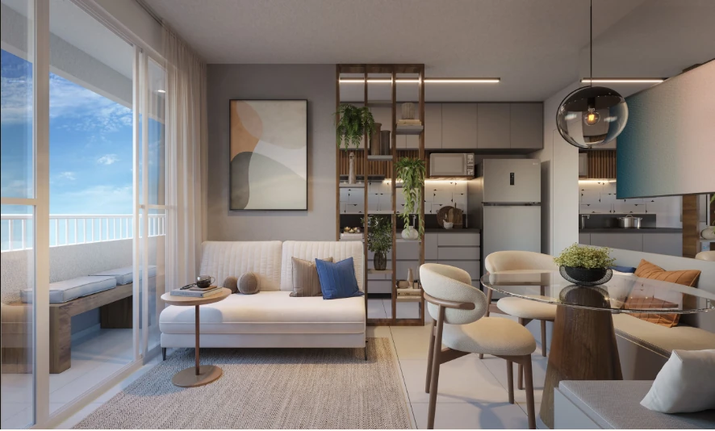
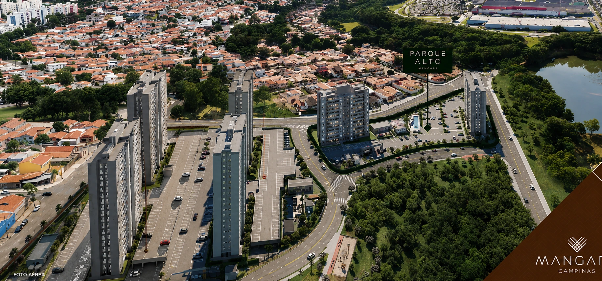

MANGARÁ • CAMPINAS
O primeiro capítulo do Complexo Mangará.
Apartamentos de 2 dormitórios com suíte e varanda, opções garden e cobertura, além de tipologia PCD específica, em uma localização estratégica próxima ao Shopping Dom Pedro.
Conheça o Parque Alto ↓2 TORRES
PARQUE ALTO
PARQUE ALTO
PARQUE ALTO MANGARÁ
Uma proposta completa para viver bem em Campinas.
Primeiro condomínio do Complexo Mangará, o Parque Alto reúne apartamentos funcionais, opções garden e cobertura, lazer completo e conveniência para diferentes momentos da rotina.

SEU ESPAÇO
Plantas para diferentes formas de viver.
Apartamentos de 2 dormitórios com suíte e varanda, além de opções garden e cobertura. A proposta combina funcionalidade, conforto e diferentes possibilidades de uso dos espaços.
2 dormitóriosSuíteVarandaGardenCobertura
LAZER & CONVENIÊNCIA
Espaços pensados para sua rotina.
Navegue pelas imagens usando as setas ou selecione uma miniatura.
1 / 12
PLANTAS PARQUE ALTO
Conheça as tipologias do Parque Alto Mangará.
Selecione uma opção para visualizar a planta em detalhes. Clique na imagem ou em “Ampliar planta” para abrir em tamanho maior.
PARQUE ALTO MANGARÁ
Unidade PCD • 44,61 m²
1 dormitório • tipologia acessível
PARQUE ALTO MANGARÁ
Apartamento tipo meio
2 dormitórios • suíte • varanda
PARQUE ALTO MANGARÁ
Apartamento Garden meio
2 dormitórios • suíte • área externa privativa
PARQUE ALTO MANGARÁ
Apartamento Garden ponta
2 dormitórios • suíte • área externa privativa
PARQUE ALTO MANGARÁ
Cobertura privativa
2 dormitórios • suíte • terraço privativo
Plantas e perspectivas ilustrativas. Medidas, acabamentos, equipamentos, disponibilidade e demais detalhes devem ser confirmados no atendimento e no material contratual.
MAIS PRATICIDADE
Lazer e conveniência no dia a dia.
Piscina, academia, salão de jogos, salão de festas, quadra, playground, espaço pet, churrasqueira, bicicletário e mini market fazem parte da proposta do condomínio.

LOCALIZAÇÃO
Conectado a uma das regiões mais completas de Campinas.
Santa Genebra • Campinas/SP. O Parque Alto integra o Complexo Mangará e está próximo ao Shopping Dom Pedro.
Próximo Shopping Dom PedroRegião Santa Genebra
Consulte no atendimento os acessos, unidades e demais informações atualizadas do empreendimento.Passe o mouse para ver os detalhes
QUER SABER MAIS?
Receba plantas, valores e condições do Parque Alto.
Preencha seus dados e receba atendimento personalizado sobre unidades, plantas e condições disponíveis.